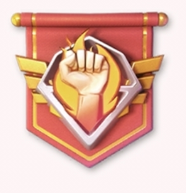

⚔️ اليوم الثاني من VS — تطوير القاعدة
كيف تصل إلى 3.6M و 7.2M بسهولة

كيف تصل إلى 3.6M و 7.2M بسهولة
السلام عليكم ورحمة الله وبركاته،
غدًا نبدأ اليوم الثاني من VS – تطوير القاعدة، ونواصل بنفس الفكرة التي بدأنا بها في اليوم الأول: التنظيم، التخزين، واستخدام كل مورد في اليوم الذي يمنح فيه أكبر عدد من النقاط.
ولكي تكون الصورة واضحة، إليكم مثالًا بسيطًا يوضح أن الوصول إلى 3.6M في اليوم الثاني لا يحتاج إلى موارد ضخمة.
| 4 شاحنات UR | 800,000 نقطة |
| 8 مهام سرية UR | 1,200,000 نقطة |
| 200 تذكرة تجنيد ناجين | 600,000 نقطة |
| 6 أيام من مسرعات البناء | 1,080,000 نقطة |
| المجموع | 3,680,000 نقطة ✅ |
الفكرة بسيطة: لا تحتاج إلى كميات هائلة من الموارد، بل تحتاج إلى تخزين الموارد المناسبة واستخدامها في اليوم المناسب.
إذا وصلت إلى 3.68M وتستطيع المواصلة، فلا يوجد سبب للتوقف. نضيف إلى المثال السابق:
| زيادة 150K في قوة المباني | 3,375,000 نقطة |
| 3 أيام إضافية من مسرعات البناء | 540,000 نقطة |
| النقاط الإضافية | 3,915,000 نقطة |
هذه الحسابات مجرد أمثلة وليست طريقة إلزامية. قد يكون لديك عدد أكبر أو أقل من المسرعات، أو مبانٍ جاهزة للإكمال، أو تذاكر ناجين أكثر.
الهدف من هذه الأمثلة هو توضيح أن 3.6M ليس رقمًا صعبًا عندما يتم التحضير لليوم مسبقًا، وأن 7.2M هدف واقعي جدًا لمن يملك الموارد ويستخدمها بذكاء.
من لديه الموارد والإمكانية، لا يتوقف عند 3.6M، بل يواصل نحو 7.2M ويفتح جميع الصناديق.
نظّموا بناءكم، استغلوا المسرعات جيدًا، ولا تنسوا شاحنات UR والمهام السرية UR وتذاكر تجنيد الناجين.